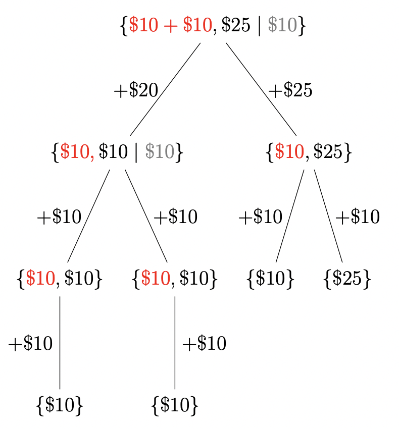

August 15: How Much Free Money Can You Win?
Puzzle
A casino offers you \$$55$ worth of “free play vouchers.” You specifically receive three \$$10$ vouchers and one \$$25$ voucher.
You can play any or all vouchers on either side of an even-money game (think red vs. black in roulette, without those pesky green pockets) as many times as you want (or can). You keep the vouchers wagered on any winning bet and get a corresponding cash amount equal to the vouchers for the win. But you lose the vouchers wagered on any losing bet, with no cash award. Vouchers cannot be split into smaller amounts, and you can only wager vouchers (not cash).
What is the guaranteed minimum amount of money you can surely win, no matter how bad your luck? And what betting strategy always gets you at least that amount?
Hint: You can play vouchers on both sides of the even money game at the same time!
Solution
Strategy 1: You place vouchers one-by-one on either black or red. This seems enticing, as you have a 50-50 chance of winning, and then you can keep recycling your vouchers and collect cash indefinitely. However, this strategy does not guarantee you any money. In fact, with four vouchers, there's a $1/16$ chance you don't win any money. And so, this is probably not the strategy to use.
Strategy 2: We place some combination of the vouchers on both red and black. My natural inclination is to try to keep the dollar amount of vouchers as large and as even as possible between red and black.
Let me say that I bet two \$$10$ vouchers on red, and \$$25$ on black. The following tree shows how much money I would win for every outcome, terminating until I only have one voucher remaining (as you are not guaranteed any money by using one voucher, as per Strategy 1).
Everything in the curly braces represent your vouchers. Red coloured vouchers indicate you bet on red, whereas black coloured vouchers means you bet on black. The grayed out voucher means it is not in play for that round. Each level of the tree represents successive rounds, and the numbers beside the tree edges represent how much money you win in that given game outcome.
We notice in the worst-case scenario, we are guaranteed to make $\$25+\$10=\$35$.
This is pretty good, but are there better voucher combinations? We can condense the tree structure above into a simple input/output function:
$$\mathcal{V}(\mathcal{S})=\max_{(\color{red}R\color{black},B,\color{gray}N\color{black})}\min\bigg[\sum \color{red}R\color{black}+\mathcal{V}(\color{red}R \color{black}\cup \color{gray}N\color{black}),\sum B+\mathcal{V}(B\cup \color{gray}N\color{black})\bigg]$$ Where our sample space is $\mathcal{S}=\{10,10,10,25\}$, $\color{red}R\color{black}$ is a voucher bet on red, and $B$ is a voucher bet on black, and $\color{gray}N\color{black}$ is a voucher not in play. After some work: $$ \begin{aligned} &\mathcal{V}({\color{red}10\color{black}},{\color{black}10+10\color{black}}\;|\;{\color{gray}25\color{black}}) =\boxed{20}, &\mathcal{V}({\color{red}10\color{black}},{\color{black}10\color{black}}\;|\;{\color{gray}25,10\color{black}}) =\boxed{30}, \\[0.8em] &\mathcal{V}({\color{red}25+10\color{black}},{\color{black}10\color{black}}\;|\;{\color{gray}10\color{black}})=\boxed{20}, &\mathcal{V}({\color{red}25\color{black}},{\color{black}10+10+10\color{black}}\;|\;{\color{gray}\varnothing\color{black}}) =\boxed{25}, \\[0.8em] &\mathcal{V}({\color{red}25+10\color{black}},{\color{black}10+10\color{black}}\;|\;{\color{gray}\varnothing\color{black}}) =\boxed{30}, &\mathcal{V}({\color{red}25+10+10\color{black}},{\color{black}10\color{black}}\;|\;{\color{gray}\varnothing\color{black}}) =\boxed{10}. \end{aligned} $$Drawing out tree diagrams can confirm the above results. So it seems our best strategy is to bet \$$25$ against \$$20$ from the two \$$10$ vouchers, which yield the highest cash earnings of $\boxed{\$35}$.